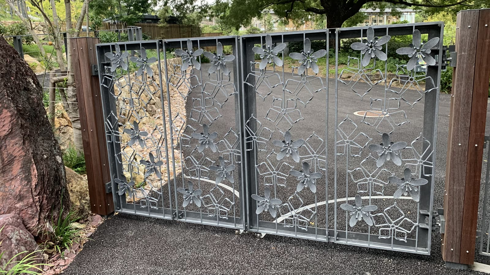
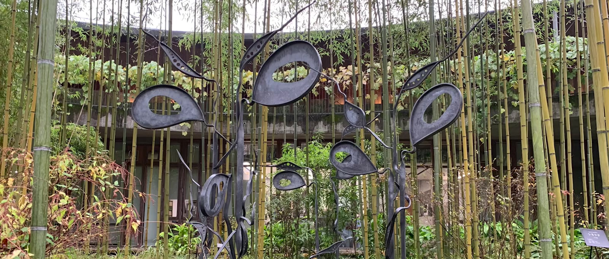
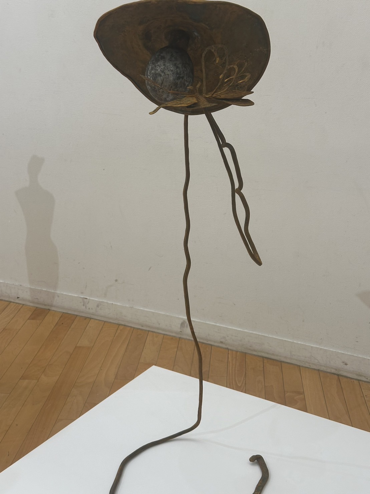
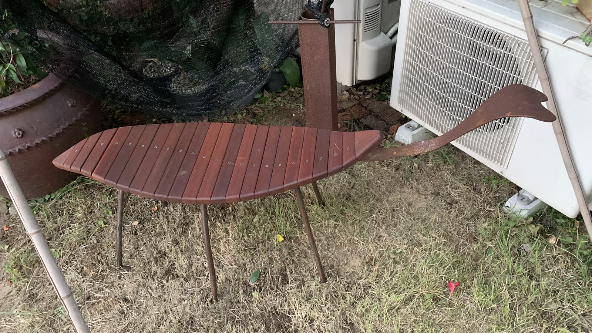
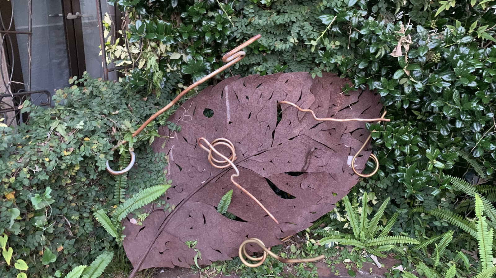
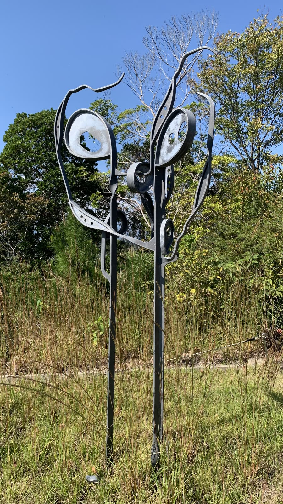
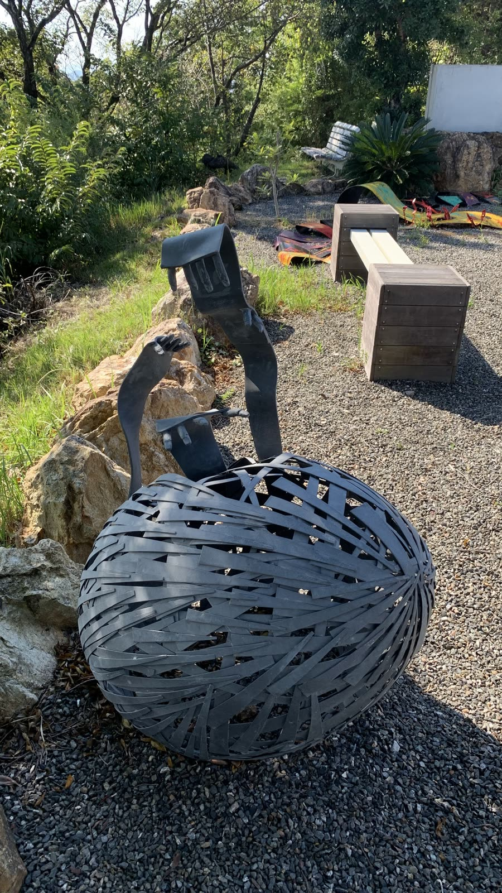
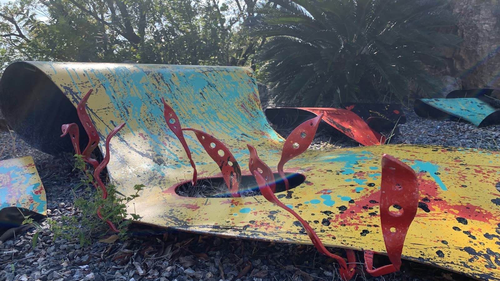

施工例ロートアイアンの門扉
オーダー制作花のモチーフを透かしたロートアイアンの門扉。有限会社アイエル物産が手がけてきた、暮らしの鉄の仕事です。
おすすめ：門まわり・外構に住宅展示場やモデルハウスの庭・玄関・リビングに、高知の職人・池内卓也がつくる鉄の作品と、座れる・掛けられる・しまえる“暮らしの鉄”を。公開期間に合わせてレンタルします。

時間帯を選ぶと、その時間の暮らしの場面と、そこにある作品が変わります。
 7:00
7:00玄関のツリーハンガーは、子どもの帽子や上着の定位置。朝の慌ただしさの中にも、家族の決まりごとが見えてきます。（写真は設置イメージ）
モデルハウスのコンセプトに合わせて、作品と“暮らしの鉄”を組み合わせてご提案します。組み合わせは一例です。


庭の広さと、そこで過ごす時間を伝えるセット。ガーデニング好きの見学者に。

片づけやすさと、遊び心のある家を伝えるセット。子育て世帯向けのモデルハウスに。


上質な素材と一点ものの作品で、家の格を伝えるセット。ハイグレードの住戸やモデルルームに。
※ 掲載作品のレンタル可否・時期は作品の設置状況により異なります。ベンチ・収納・ハンガーの写真は設置イメージです。
このベンチ、庭に置いたら気持ちよさそうだね。
── 庭のある家を見学するご夫婦（想定）帽子、ここに掛けるのかな？ 葉っぱのフックだ！
── 子どもと見学する家族（想定）あの彫刻のあった家、もう一度見に行ってみよう。
── 何軒も見学したあとで（想定）期間・料金は、作品・点数・設置場所・搬入条件をうかがってお見積りします。
モデルハウスの写真や図面と、公開期間を。
コンセプトに合う作品とセットをご提案。
公開前の日程に合わせて設置。
公開終了に合わせて撤去します。
屋外に設置されてきた作品もあります。設置場所の環境をうかがってご提案します。
ベンチなど使うことを前提にしたものと、眺める作品があります。動線に合わせて配置をご提案します。
作品によってはご相談いただけます。まずはお知らせください。
NEW2026年10月撮影 ／ 作家 池内卓也
2026年10月に撮影した写真と映像です。門扉や庭に置ける作品、そしてベンチの実物の写真も届きました。モデルハウスの外構や庭のステージングにご活用ください。

施工例花のモチーフを透かしたロートアイアンの門扉。有限会社アイエル物産が手がけてきた、暮らしの鉄の仕事です。
おすすめ：門まわり・外構に
実物これまで設置イメージでご紹介していたベンチの実物です。木の座面に細い鉄の脚、先端には鉄の頭がつきます。
おすすめ：庭でくつろぐ暮らしを見せる
実物写真 8枚鉄の葉、銀色の花、鎖の脚のテーブル、蝶のとまるランプ、小さな動物たち。庭の緑の中に点々と置ける、小ぶりな作品です。
おすすめ：庭・アプローチに点々と
屋外に設置写真 2枚鉄の葉と種のかたちが、空に向かって伸びる。草木の中に立ち、風景に溶けこむ作品です。
おすすめ：庭のシンボルとして
設置事例写真 3枚細い鉄の帯を幾重にも編んだ大きな球に、身を乗り出すような人の姿。見る角度で表情が変わります。井上ワイナリーの高台の庭に設置されています。
おすすめ：前庭・分譲地の共用部に
設置事例写真 4枚色を重ねて塗った鉄板と、散らばる色とりどりの鉄の葉。砂利の上で、絵の具が飛び散ったような明るさを放ちます。井上ワイナリーの庭に設置されています。
おすすめ：子どものいる家の庭に※ ページ上で流れる短い映像は音声なしです。「全編を見る」「映像を見る」はYouTubeで再生します。掲載作品のレンタル可否・時期は作品の設置状況により異なります。門扉はレンタルではなくオーダー制作のご紹介です。